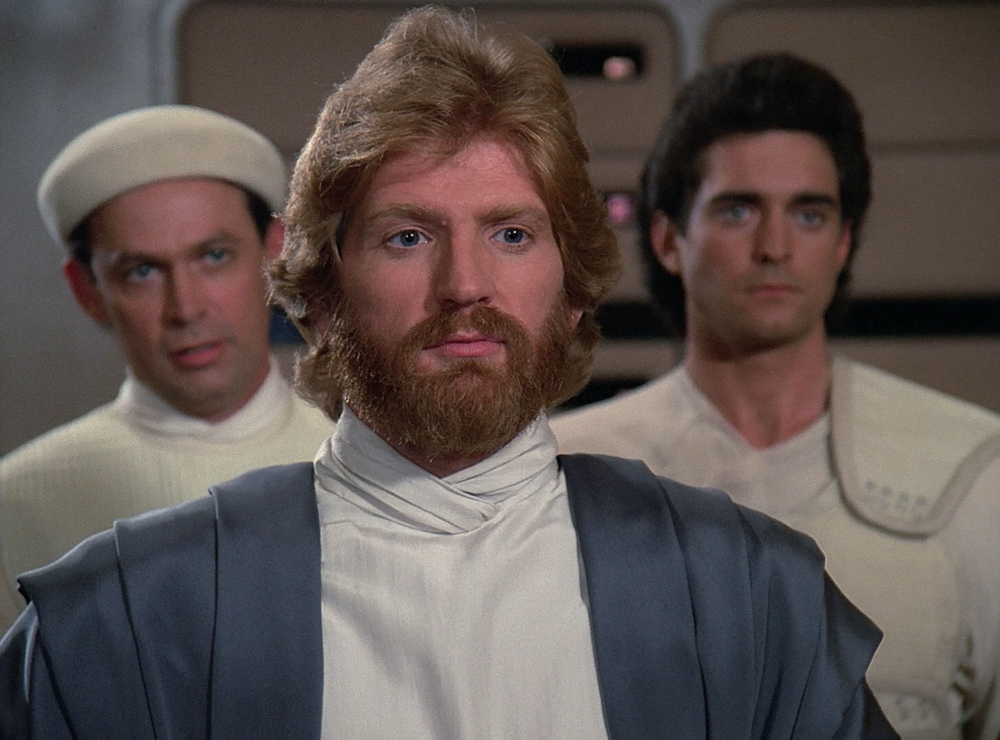
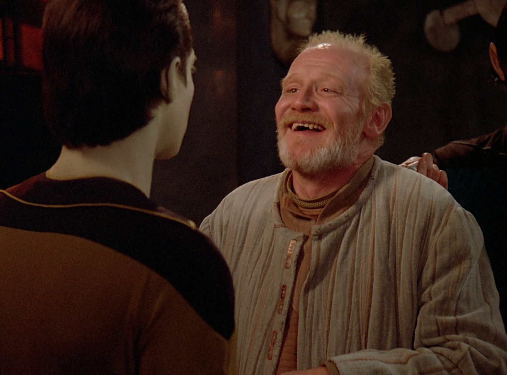
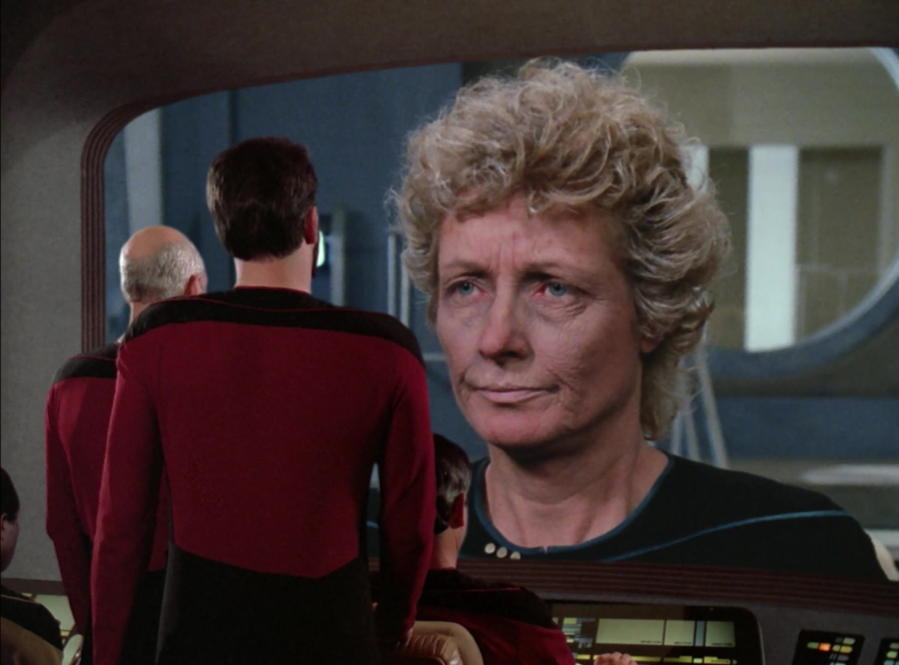
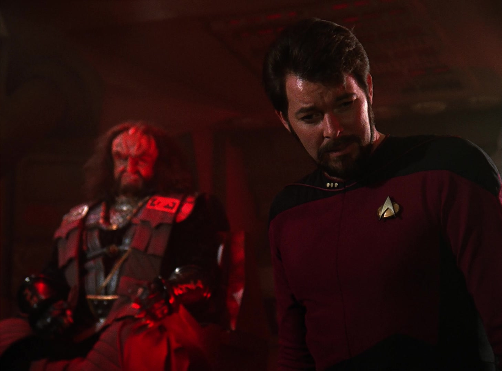
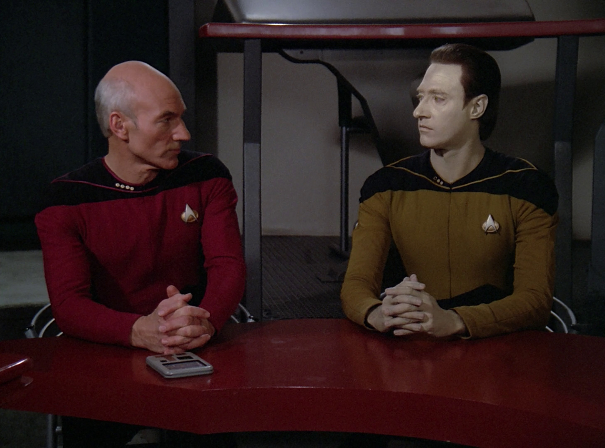
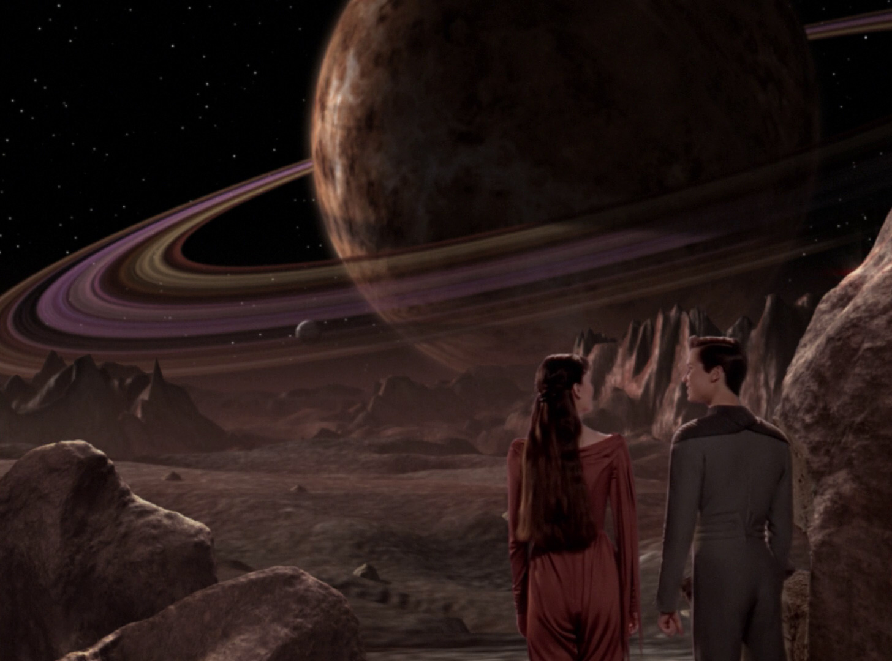

uncatastrophe.net
Season 2
S2E05 - Loud As A Whisper
This one is about a legendary peace negotiator that has learned to communicate in a very unusual way. It's pretty good! I really love the implementation of Riva's language, and his 'friends' remind me of Greek and Rennaissance figures. The dialogue is a little stilted and some scenes are awkward, but overall a pleasant watch.
VERDICT:
S2E06 - The Schizoid Man
Unfortunately nowhere near as cool as the King Crimson song. Dr. Graves puts his conciousness in Data's. You watch the setup and immediately predict the rest of the episode. Tons of redundant dialogue. "I'm an old man and I am a complete asshole! I also hate women! I am also an alien-racist! My function is to be an asshole!" This one is bad, folks.
VERDICT:
S2E07 - Unnatural Selection
An episode focused on Dr. Pulaski. She contracts some kind of disease that makes her old, a bunch of boring character dialogue happens, and the episode is resolved through some contrived biological trick. Not terrible, but pretty hard to sit through. Worth a watch if you like Dr. Pulaski.
VERDICT:
S2E08 - A Matter of Honor
THIS EPISODE OWNS SO HARD!!!! Riker becomes a transfer to a Klingon vessel, and must adapt quickly. Tons of really cool exploration into Klingon society, and tons of sweet exploits by the Commander. Really engaging stuff, and the resolution to the episode left me grinning like an idiot. One of the more exciting episodes.
VERDICT:
S2E09 - The Measure of a Man
One of the best Data episodes. Data is put on trial to determine if he is property or not. An episode almost entirely comprised of dialogue, and interesting the whole way through. Maybe it gets a little preachy with its message, but it doesn't bother me too much. Plus, the presiding judge being an old fling of Picard's is actually a good subplot.
VERDICT:
S2E10 - The Dauphin
Wil Wheaton is a terrible actor. This episode features Wesley as he courts some alien girl. Tons of weird plot contrivances ensue. Would be irredeemable if it wasn't for the fun sequence of scenes where Wesley asks the crew about how to pick up girls. Riker flirting with Guinan is a pretty funny scene if you can find it on Youtube. Overall, though, pretty painful.
VERDICT: